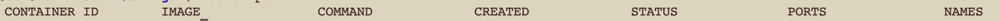

Minimum Requirements
Confirm Docker Installation
Enter the following commands to confirm that Docker & docker-compose are installed. You should get the expected result:
docker ps

If instead you see something like:
/usr/bin/docker-current: Got permission denied while trying to connect to the Docker daemon socket at unix:///var/run/docker.sock: Post http://%2Fvar%2Frun%2Fdocker.sock/v1.26/containers/create: dial unix /var/run/docker.sock: connect: permission denied.
Then run the command: sudo chmod 666 /var/run/docker.sock
Confirm Docker & Docker-Compose Versions
docker --version
Expected result: Docker version 19.03.6 (or higher)
docker-compose --version
Expected result: docker-compose version 1.17.1 (or higher)
If you see the expected results for these commands, you're ready to proceed to install STINGAR.